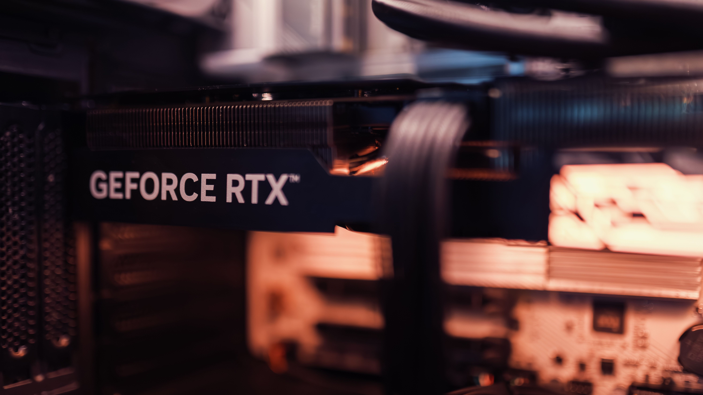

Yowl
Yowl
Escolher uma placa de vídeo em 2027 exige estratégia. Com o mercado de hardware enfrentando variações nos custos de componentes de memória (VRAM) e a consolidação de tecnologias avançadas como o DLSS 4/5 e o path tracing pesado em títulos de peso — incluindo a chegada de obras-primas como GTA 6 aos computadores —, investir na GPU certa é o que vai garantir alta taxa de quadros e longevidade para o seu setup.
Placas de vídeo recomendadas:
- NVIDIA GeForce RTX 5060 (8 GB)
- AMD Radeon RX 9060 XT (16 GB)
- NVIDIA GeForce RTX 5070 (12 GB)
- AMD Radeon RX 9070 XT
- NVIDIA GeForce RTX 5070 Ti (16 GB)
- NVIDIA GeForce RTX 5080 (16 GB)
Custo-Benefício
Se o objetivo é rodar tudo com ótima qualidade gráfica sem precisar vender um rim, estas duas opções entregam o equilíbrio perfeito entre preço e performance.
1 - NVIDIA GeForce RTX 5060 (8 GB)
- Ideal para: Jogadores de 1080p que buscam alta taxa de quadros e tecnologias modernas.
- Por que vale a pena: A RTX 5060 consolidou-se como a porta de entrada mais inteligente para quem quer aproveitar recursos avançados de renderização neural e tecnologias de geração de quadros sem gastar uma fortuna. É eficiente energeticamente e roda os principais lançamentos da atualidade com tranquilidade em Full HD.
- Prós: Consumo de energia baixo; acesso a recursos de ponta da NVIDIA por um preço mais acessível.
- Cons: Os 8 GB de VRAM exigem moderação em texturas no talo em alguns jogos muito pesados em resoluções mais altas.
2 - AMD Radeon RX 9060 XT (16 GB)
- Ideal para: Quem quer longevidade em 1080p/1440p com muita margem de memória.
- Por que vale a pena: A grande carta na manga da AMD nesta faixa é a generosa quantidade de memória VRAM. Com 16 GB, esta placa lida muito bem com texturas pesadas e ports modernos mal otimizados, garantindo que você não sofra com engasgos por falta de espaço na placa nos próximos anos.
- Prós: Excelente quantidade de VRAM para a categoria; ótima performance em rasterização pura (jogos sem Ray Tracing).
- Cons: Tecnologias de reconstrução de imagem e Ray Tracing ficam um passo atrás da concorrência direta.
Intermediárias
Para quem quer subir o nível, jogar com tudo no ultra em resoluções Quad HD (1440p) e ter folga para rodar jogos pesados com fluidez máxima.
3 - NVIDIA GeForce RTX 5070 (12 GB)
- Ideal para: Jogadores exigentes em 1440p que não abrem mão de gráficos no talo.
- Por que vale a pena: A RTX 5070 entrega um salto de desempenho formidável em relação à geração passada. Com suporte otimizado para as tecnologias mais recentes de IA e excelente eficiência com Ray Tracing, ela entrega uma experiência visual impecável em monitores de alta taxa de atualização.
- Prós: Desempenho brilhante em 1440p com Ray Tracing ativado; excelente ecossistema de software.
- Cons: Preço sujeito a oscilações de mercado devido à alta demanda global por chips de memória.
4 - AMD Radeon RX 9070 XT
- Ideal para: Quem busca desempenho de ponta em 1440p e 4K inicial sem pagar preços exorbitantes de topo de linha.
- Por que vale a pena: A RX 9070 XT briga de igual para igual com concorrentes mais caros da NVIDIA em jogos tradicionais (sem ray tracing). Ela entrega taxas de quadros altíssimas, muita estabilidade e ótima largura de banda, sendo uma das queridinhas dos entusiastas de custo-benefício intermediário.
- Prós: Custo por quadro excelente; construção robusta e ótima performance pura.
- Cons: Consumo energético um pouco mais elevado que a média da categoria.
Alto Nível / Entusiastas
Para quem não aceita meio-termo, joga em monitores 4K de altíssima definição ou trabalha com renderização pesada e inteligência artificial local.
5 - NVIDIA GeForce RTX 5070 Ti (16 GB)
- Ideal para: O "ponto de ouro" dos entusiastas — performance de 5080 quase pelo preço de uma intermediária premium.
- Por que vale a pena: Compartilhando muita da arquitetura dos modelos superiores e equipada com 16 GB de memória GDDR7 rápida, a RTX 5070 Ti é amplamente considerada a placa mais equilibrada para quem quer rodar jogos pesados em 4K com DLSS ativado sem precisar migrar para as opções ultra-caras.
- Prós: Desempenho muito próximo ao da RTX 5080 por um custo menor; excelente margem de VRAM.
- Cons: Os preços de mercado costumam flutuar bastante devido à pressão da cadeia de suprimentos.
6 - NVIDIA GeForce RTX 5080 (16 GB)
- Ideal para: 4K nativo com todas as configurações gráficas no máximo absoluto.
- Por que vale a pena: É o monstro de performance para quem quer a experiência definitiva de jogos em 2027. Com suporte a taxas de quadros absurdas, path tracing completo em tempo real e tecnologias de geração multi-quadro, ela foi feita para durar anos no topo. (Nota: Fique de olho nas revisões de mercado e novas variações de VRAM que a fabricante introduz para atender à demanda profissional).
- Prós: Desempenho gráfico absoluto em qualquer resolução; tecnologias exclusivas de ponta.
- Cons: Preço extremamente elevado e exige uma fonte de altíssima qualidade e gabinete bem ventilado.
Dica de Ouro!: Antes de escolher a sua placa, olhe para o seu monitor e para a sua fonte de alimentação (PSU). De nada adianta comprar uma GPU de alto nível se o seu monitor é básico de 60Hz em 1080p, ou se a sua fonte não tem potência e conectores suficientes (como o padrão PCIe 5.0/12VHPWR) para alimentar o componente com segurança!

Conclusão
Investir em uma placa de vídeo em 2027 resume-se a alinhar sua escolha ao seu estilo de jogo e ao seu monitor. Se o seu foco é 1080p competitivo e economia, as linhas de entrada entregam o que prometem. Se você busca imersão total em 1440p ou 4K com gráficos no talo, as intermediárias e os modelos de alto nível garantem que seu setup esteja blindado para os gigantes da nova geração. Avalie seu orçamento, cheque sua fonte e prepare seu PC para rodar tudo no ultra!